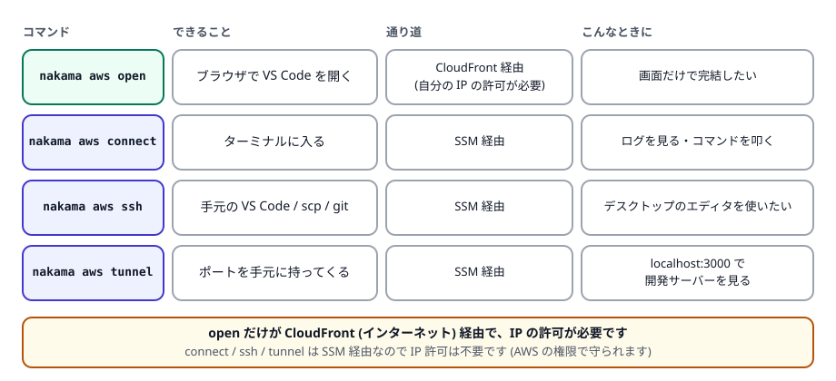

第 5 章 開発環境を使う
作った環境には 4 つの入り方があります。全部覚える必要はありません。まずは open と connect の 2 つを知っておけば十分です。
1. 4 つの方法の使い分け

open だけがインターネット (CloudFront) 経由なので IP の許可が必要です。ほかの 3 つは SSM 経由なので IP 許可は不要です。2. ブラウザで開く (open)
PowerShell で実行
nakama aws open dev01ブラウザが開き、パスワードの入力も自動で通過して、VS Code の画面が表示されます。あとは普段の VS Code と同じように使えます。
nakama は AWS からパスワードを取得し、あなたのパソコンの中だけで動く 1 回限りのページ (ランダムな文字列付きの URL) を作って、そこからログインフォームを自動送信します。パスワードはディスクに書き込まれません。
状況に応じて次のオプションが使えます。
| オプション | 用途 |
|---|---|
--print-url | ブラウザを開かず URL だけ表示します (別の端末で開きたいとき、SSH 経由のとき) |
--no-auth | 自動ログインをせず、URL を開くだけにします (パスワードは手で入力) |
--browser <コマンド> | 使うブラウザを指定します (URL が最後の引数として渡されます) |
--timeout <時間> | 自動ログイン用ページの待ち時間 (既定 30 秒) |
あなたの接続元 IP が許可リストに入っていません。nakama aws acl add を実行してください (第 3 章)。nakama は開く前に IP をチェックし、未登録なら警告を表示します。
--bare の環境には code-server も CloudFront もないため、open は使えず、代わりの方法を案内するエラーになります。
3. ターミナルに入る (connect)
ログを見たい、コマンドを叩きたい、というときは connect です。SSH の鍵や設定は不要で、AWS の権限だけで入れます。
PowerShell で実行
nakama aws connect dev01 # 対話シェルに入る (exit で抜ける)
nakama aws connect dev01 ls -la # コマンドを 1 つだけ実行する
nakama aws connect --tty dev01 top # 画面が動くコマンドを実行する (フラグは名前より前)code-server と同じユーザーなので、ファイルの権限で悩まずに済みます。管理者権限が必要なときは sudo を使えます (パスワードは不要です)。
ネットワークが不安定でセッションが切れた場合、対話シェルでは自動で再接続します (既定で最大 5 回)。再接続後は新しいシェルになるため、カレントディレクトリや実行中のプロセスは失われます。長時間の作業は tmux や screen の中で行うと安全です。
コマンドを 1 つ実行するモードでは、同じコマンドを二重に実行してしまわないよう、既定で再接続しません。--retry <回数> で明示できます (--retry 0 で無効)。
4. 手元の VS Code から使う (ssh)
ブラウザ版ではなくデスクトップ版の VS Code を使いたい、scp でファイルを送りたい、git を ssh 経由で使いたい。そんなときは ssh setup を一度実行します。
PowerShell で実行
nakama aws ssh setup dev01key: C:\Users\you\.ssh\id_ed25519.pub (authorized for ubuntu)
snippet: C:\Users\you\.config\nakama\ssh\dev01.conf
# Generated by `nakama aws ssh setup dev01`. Include this file from
# ~/.ssh/config; nakama never edits ~/.ssh/config itself.
Host nakama-dev01
User ubuntu
HostName nakama-dev01
ProxyCommand "C:\Users\you\bin\nakama.exe" aws ssh proxy dev01 --port 22
# The proxy carries ssh over SSM Session Manager: no inbound port,
# no public IP, and host keys are per-instance as usual.
StrictHostKeyChecking accept-new
Add this line to ~/.ssh/config (once per instance file):
Include C:\Users\you\.config\nakama\ssh\dev01.conf
Then: ssh nakama-dev01 | VS Code: Remote-SSH -> nakama-dev01ここで表示された Include の行を、自分の ~/.ssh/config (Windows では C:\Users\<あなた>\.ssh\config) に1 行追加します。
-
.sshフォルダーとconfigファイルを用意します (既にあれば不要)。PowerShell で実行
New-Item -ItemType Directory -Force "$env:USERPROFILE\.ssh" New-Item -ItemType File -Force "$env:USERPROFILE\.ssh\config" -
表示された
Include行を追記します。Includeは他のHost設定より前 (ファイルの先頭) に置くのが安全です。PowerShell で実行 (末尾に追記する例)
Add-Content "$env:USERPROFILE\.ssh\config" "Include $env:USERPROFILE\.config\nakama\ssh\dev01.conf"メモ帳などで開いて手で書いても構いません。
-
接続します。
ssh nakama-dev01 -
デスクトップ版 VS Code の場合は、拡張機能「Remote - SSH」を入れてから、コマンドパレット (Ctrl+Shift+P) で Remote-SSH: Connect to Host を選び、一覧に出てくる
nakama-dev01を選びます。
- 登録されるのは公開鍵だけです。秘密鍵は手元から出ません。鍵が無い場合は先に
ssh-keygen -t ed25519で作ってください - 鍵を明示するときは
--identity C:\Users\you\.ssh\id_ed25519.pub、鍵の登録をせず設定ファイルだけ作るときは--no-keyを使います - nakama はあなたの
~/.ssh/configを書き換えません。生成するのは~/.config/nakama/ssh/<名前>.confだけで、取り込むかどうかはあなたが決めます - 同じ操作を何度実行しても、公開鍵が二重に登録されることはありません
connect や tunnel のような nakama の自動再接続は、ssh 経由では働きません。切断が気になる場合は、~/.ssh/config に ServerAliveInterval 30 のような設定を自分で足してください。
5. ポートを手元に持ってくる (tunnel)
開発環境で動かした Web サーバー (例: ポート 3000) を、手元のブラウザで http://localhost:3000 として見たい場合に使います。
PowerShell で実行
nakama aws tunnel dev01 -L 3000:3000tunnel started for dev01 (pid 12345):
FORWARD STATE SINCE DETAIL
3000:3000 active 0sこのコマンドはすぐに終了します。転送は裏で常駐するプログラムが維持するので、ターミナルを閉じても続きます。
| コマンド | 内容 |
|---|---|
nakama aws tunnel dev01 -L 3000:3000 | 転送を開始 (start は省略できます) |
nakama aws tunnel start dev01 -L 8080:8080 -L 5432:db.internal:5432 | 複数同時に転送。3 つ組の形式は「手元のポート:相手ホスト:相手のポート」です |
nakama aws tunnel status dev01 | その環境の転送状態を表示 |
nakama aws tunnel status | このパソコンに記録されたすべての転送を一覧 (AWS の資格情報が不要) |
nakama aws tunnel suggest dev01 | 環境側で待ち受けているポートを調べて、-L の書き方を提案します (転送はしません) |
nakama aws tunnel restart dev01 | 設定を変えずにつなぎ直す (再サインインの後などに) |
nakama aws tunnel stop dev01 | 転送を止めて常駐も終了 |
status の STATE 列の意味です。
| 表示 | 意味 | 対処 |
|---|---|---|
active | 正常に転送中 | — |
reconnecting | 切断され、再接続を試みている | しばらく待つ |
dead | 再接続できずに諦めた (資格情報の期限切れが多い) | nakama aws login のあと tunnel restart <名前> |
stale | 常駐プログラムが見つからない (記録だけ残っていた) | 表示時に自動で片付けられます。必要なら再度 tunnel start |
nakama aws tunnel suggest dev01環境側で待ち受け中のポートを調べて、そのままコピーできる -L 付きのコマンドを提案します。22 番 (ssh) は転送ではなく ssh の使用が適切なので、提案からは除かれます。
ログは OS の標準的な場所に出ます (Windows はイベントログ、macOS / Linux は syslog)。転送の状態は ~/.config/nakama/tunnels/<名前>.json に保存され、tunnel stop で削除されます。